When Ranger changes or deletes a day he's planned on
You asked for a line on the schedulers' bell when a SANS man deletes or changes his availability for a day he's already planned on. This page shows that line drawn on the real app, six small questions about when it goes out, and the crew list's letters lined up in one column as you asked.
New since you last looked: the line now says “changed” wherever it said “cut back”, as you asked (pictures 3, 4, 7, 16 and 17). Question 3 is now only a line or no line. In picture 12 the quieter line names Ranger, so “He” can't be read as Saber.
1The bell line's words, for the four cases
When this happens
Ranger has offered to fly on Sat 18 Jul, 08:00–17:00. A few days before, Saber puts him on VL BFM, take-off 13:00. Later Ranger opens the SANS calendar on his phone and deletes that day, or changes it. It's rare: a few times a month at most, and only for SANS men.
What the app does today
- Nobody is told. Saber's bell stays “Nothing new” (picture 1).
- After a delete, the day's warning list says nothing about Ranger either. After a change that leaves the flight uncovered, the warning list does flag it, but only if Saber opens that day.


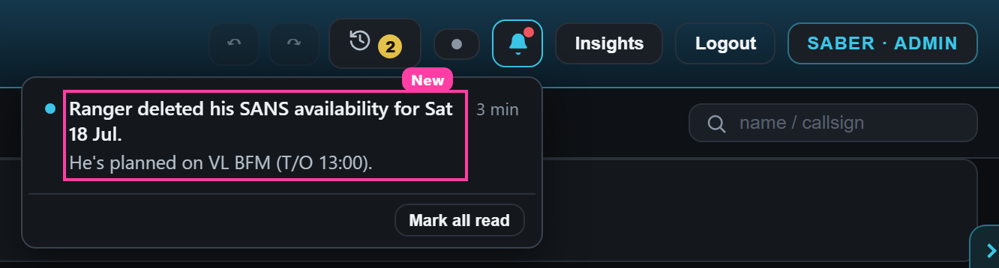


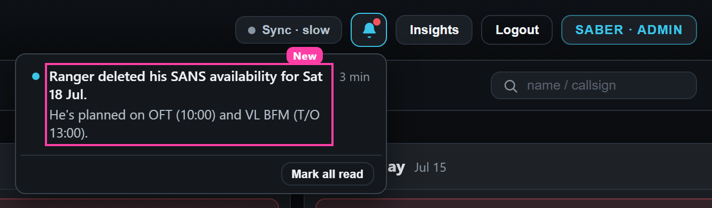
The same on a phone, and today's pictures for (b) to (d)


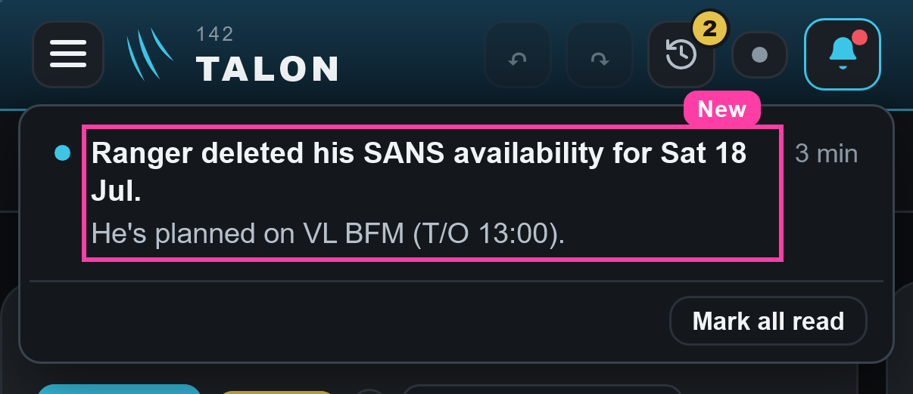


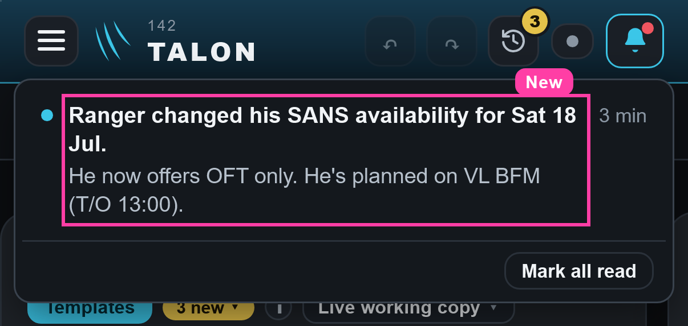

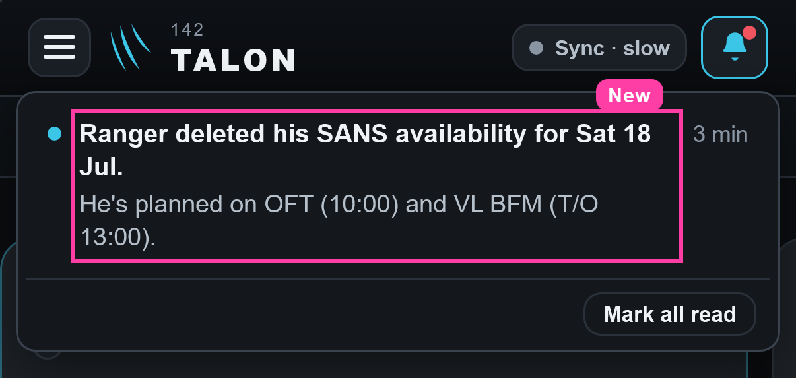


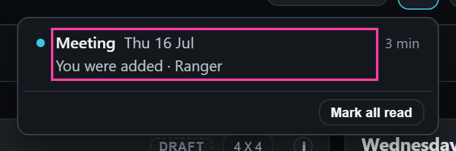
- “Deleted”, not “withdrew”: Delete is the button he presses, and the app already uses “withdraw” for Unpublish and for a leave bid taken back.
- No “· Ranger” after the line, as other bell lines have: the line already starts with his name.
- Every change that isn't a delete has the same heading, “Ranger changed…”. What he now offers goes on the quieter line.
- What he now offers is written the way his SANS card writes it: “All day”, his own hours, or “OFT only” where an event he offered before is gone.
Found while drawing: the heading breaks inside the date (on the phone “Sat 18” on one line and “Jul.” on the next; on the desktop “Sat”, then “18 Jul.”), and on the phone the quieter line breaks inside “VL BFM” (picture 3) or inside “(T/O 13:00)” (picture 5). The build can keep each of these together on one line.
Recommended: yes, as drawn
The heading says who did what to which day. The quieter line says what he now offers and what he's planned on, so Saber can see from the line alone whether he needs to replace Ranger.
Your answer: yes, as drawn (recommended)/change the words
2He shortens his hours, but the flight is still covered
When this happens
Ranger is on VL BFM, take-off 13:00, on Sat 18, and has offered Fly 08:00–17:00. He shortens it to 10:00–17:00. The flight still falls inside his hours: the app checks from his step at 12:00 to the end of de-kit at 15:30. The warning list stays clear.


The same on a phone

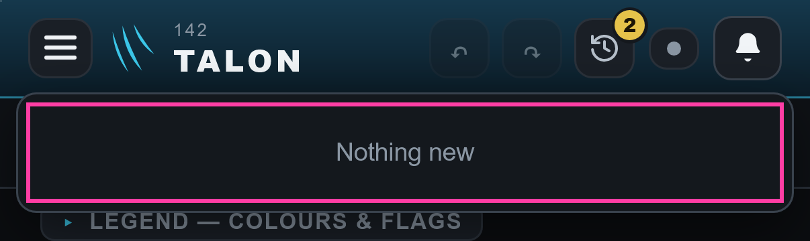

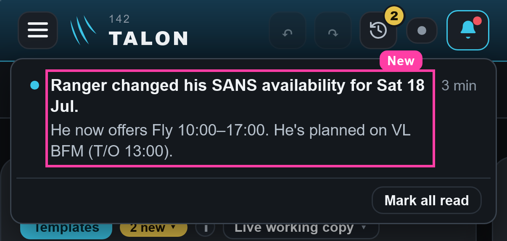
Recommended: no line
The line is there so Saber can fix the plan. If everything Ranger is planned on is still covered, there's nothing to fix. You asked for a line when he changes a day he's planned on, and read on its own that includes this case, so this is your call.
Your answer: no line (recommended)/a line for any change on a planned day
3He moves his hours instead of shortening them
When this happens
Same flight. Ranger had offered Fly 10:00–16:00, which covers it. He changes it to 14:00–20:00: still six hours, but the flight now falls outside them, and the warning list flags it.

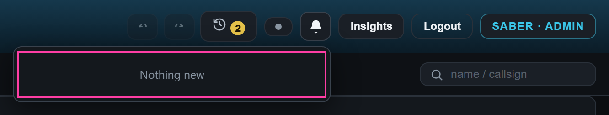

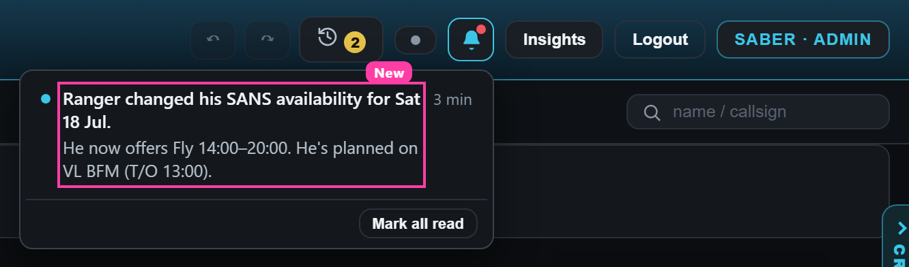
The same on a phone


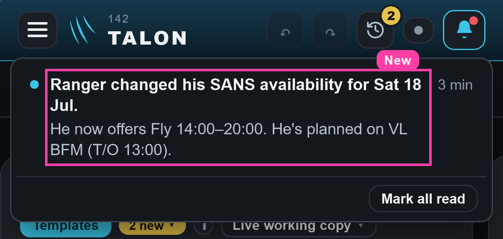
Recommended: a line
The flight is no longer covered, just as when he shortens his hours, so Saber needs to know. The line says “changed”, as in picture 3.
Your answer: a line (recommended)/no line
4A scheduler deletes it for him
When this happens
Admins can file and delete SANS availability for a man. Ranger rings Saber to say he can't make Sat 18, and Saber deletes the day for him, while Ranger is still on VL BFM. You asked for a line when a SANS man deletes it himself, so this case wasn't decided. If a line went out saying “Ranger deleted…”, it wouldn't be true.

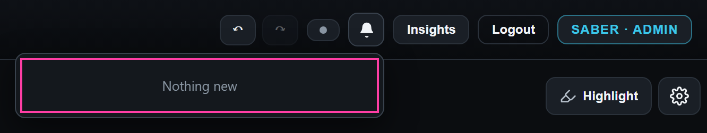

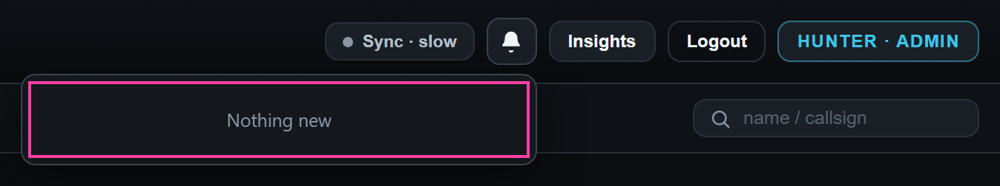

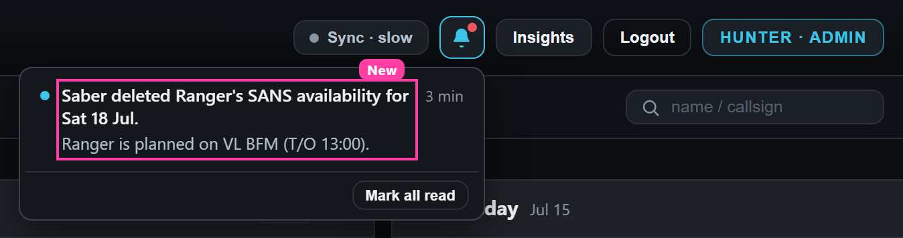
The same on a phone


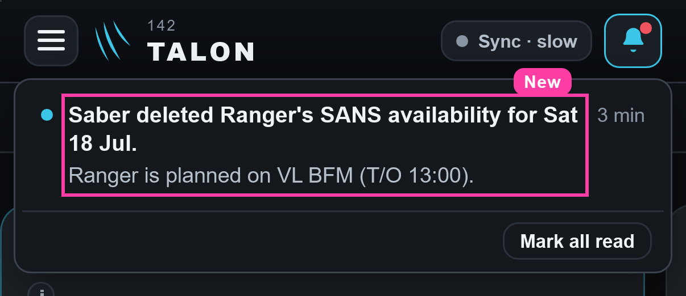
Ranger's own bell isn't part of this question. Today he is told that his input was deleted, the same as for any input someone else deletes.
Recommended: a line to the other schedulers, naming who did it
The other schedulers still need to know Ranger is no longer available for a flight he's on. The one who pressed Delete already knows.
Your answer: a line to the others (recommended)/no line when a scheduler does it
5One filing over two planned days, deleted in one press
When this happens
Ranger offers Sat 18 and Sun 19 in one go. Saber puts him on VL BFM on Saturday and an OFT at 10:00 on Sunday. Ranger then deletes it with one press, which takes both days away.

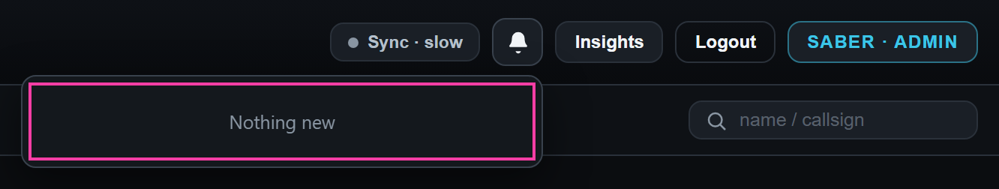

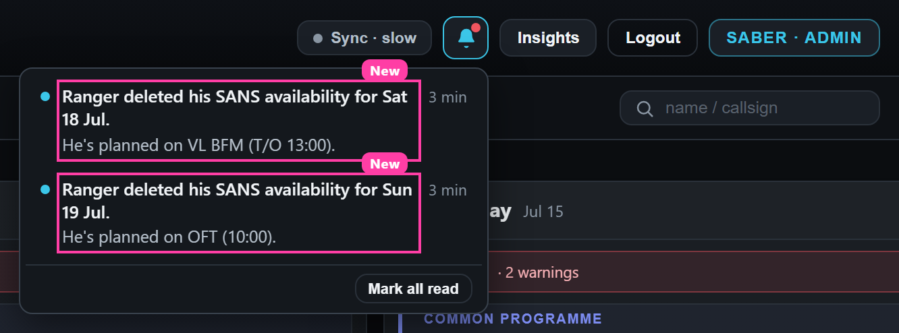
The same on a phone


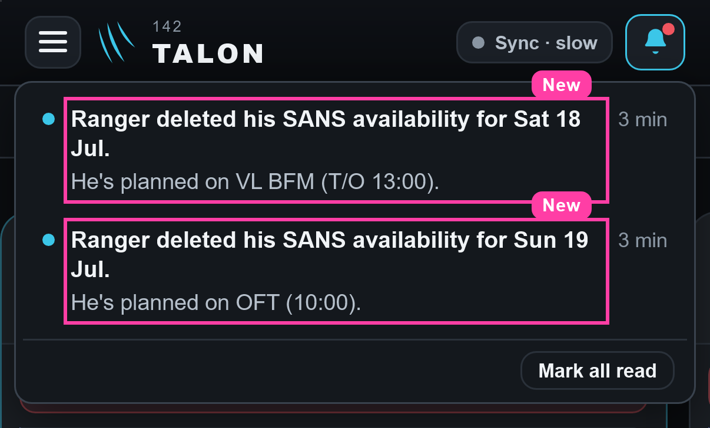
The warning list calls Sunday's box “Sim OFT 10:00–11:00”. The line says “OFT (10:00)” so that a sim reads the same way as a flight, “VL BFM (T/O 13:00)”. Which name the line gives a sim is settled when it's built.
Recommended: one line a day
Ranger's own reminder is one line a day. A tap on a line opens its day, so each line takes Saber straight to the day he has to fix.
Your answer: one line a day (recommended)/one line naming both days
6Planned on two things, only one no longer covered
When this happens
Ranger had offered Fly and OFT, 08:00–17:00, on Sat 18. Saber put him on an OFT at 10:00 and VL BFM. Ranger changes it to OFT only, so the OFT is still covered but the flight isn't. The warning list flags only the flight.


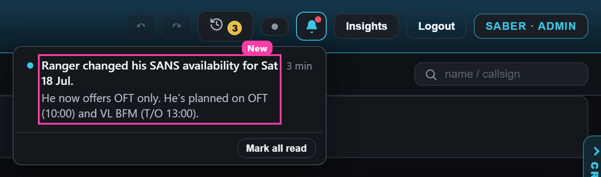
The same on a phone


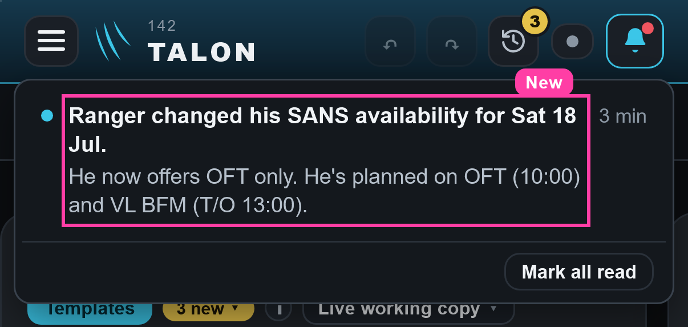
Picture 5 names both because there he deleted everything, so neither is covered.
Recommended: name only the one no longer covered
That's the one Saber has to act on.
Your answer: only the one no longer covered (recommended)/everything he's planned on that day
7What counts as “planned”
When this happens
Ranger is on a ground brief or a duty desk on Sat 18, not a flight or a sim, and deletes his SANS availability for that day.
Recommended: a flying seat or a sim only
His own reminder already counts only a flying seat or a sim (OFT, AMT). SANS availability is about flying and the sims, so a ground brief or a duty desk doesn't depend on it, and no line goes out. Nothing to picture.
Your answer: a flying seat or a sim (recommended)/anything he's on that day
✓The crew list's F / O / A letters in one column
When this happens
Saber, at his desk, presses an empty AMT seat on Sun 19 (13:00–14:00). The crew list shows every SANS man with his reason and the small letters of what he offered. This happens whenever he fills a sim or flight seat. You decided the letters line up in one column, straight after the longest reason.

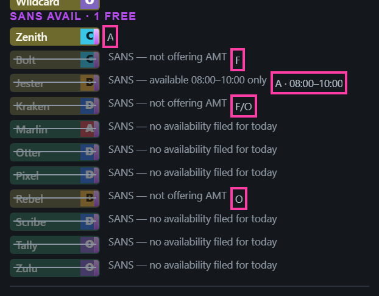

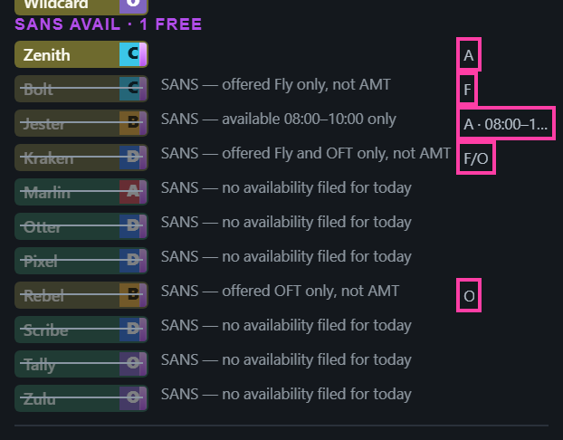
The same on a phone, and the new words without the column

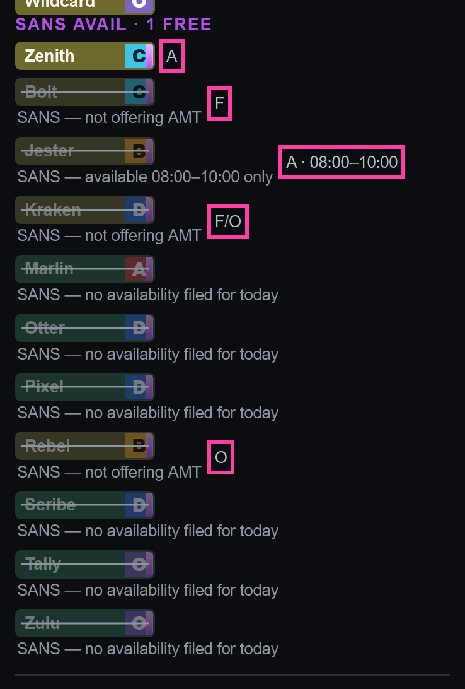

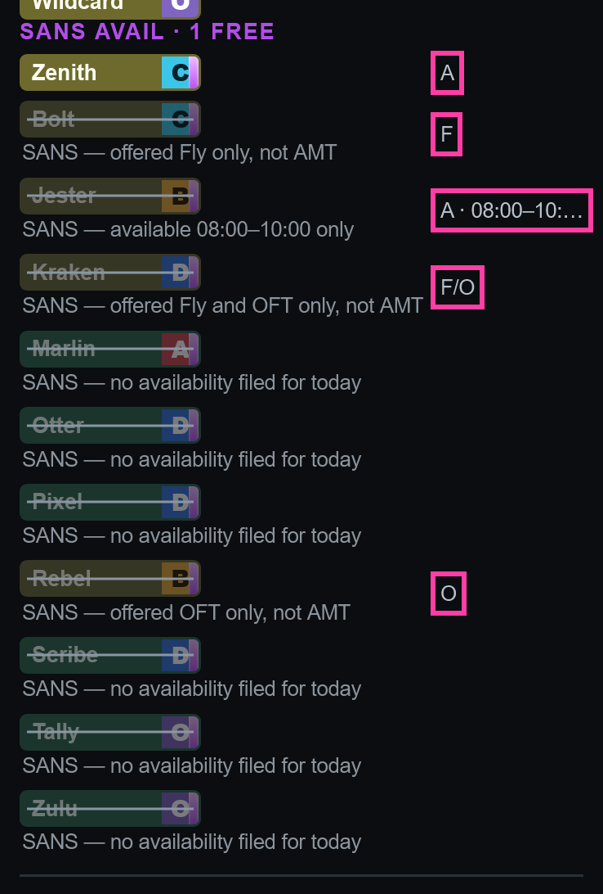

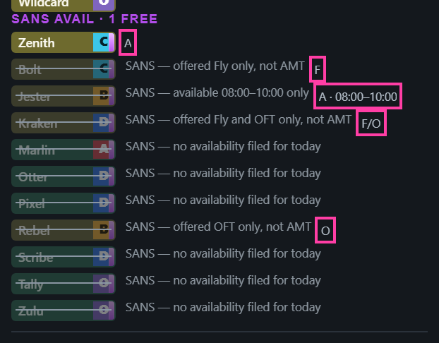
Found while drawing
- Jester's hours get cut short. A man who offered hours shows them beside his letter (“A · 08:00–10:00”). Once the column moves right, there isn't room, and it reads “A · 08:00–1…” on both screens (picture 19). The build should never cut his hours. One way is to let the hours go onto a second line under the letter, as the app wraps text elsewhere. That isn't drawn yet.
- Zenith's letter moves away from him. A man who isn't struck has no reason, so his “A” now stands out in the column, well away from his name. That's how one column works.
- Men with nothing filed have no letters, so nothing moves on their rows.